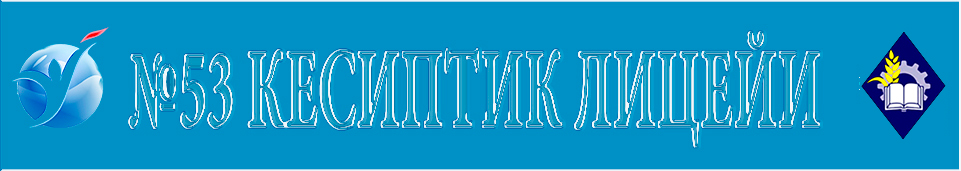
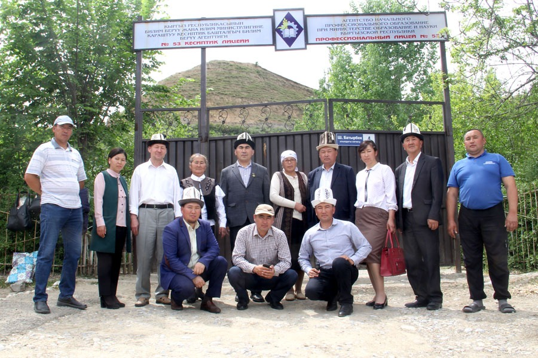

|  |
Welcome to our lyceum !!!Биздин сайтка кош келиниз!!!Биздин коллективӨндүрүштүк-окутуу курамы, илимий-изилдөө багыттары Учурда лицейде 27 мугалим эмгектенүүдө. Алардын курамында 4 КРдин «Эл агартуунун мыктысы» төш белгисинин ээси, 6 мыкты ардагер методист-мугалимдерибиз бар. Лицейдин жамааты өзүнүн алдына төмөнкү милдеттерди коюп келет: - Окуучулардын биология жана химия предметтери боюнча билим сапатын жогорку деңгээлге жеткирүү; - Англис жана кытай тилдерин тереңдетип окутуу; - Компьютердик сабаттуулугун арттыруу, - Адеп-ахлактык маданиятын калыптандыруу процессинде окутуунун алдыңкы, эффективдүү усулдарын колдонуу. Мугалимдер өздөрүнүн тажрыйбалык жумуштарын лицейден сынактан өткөрүшөт. Бир нече семинарларга катышышып, атайын сертификаттарга ээ болушкан. Окутуунун жаңы технологиялары боюнча бири-бири менен тажрыйба алмашып турушат. Бир нече методикалык китептерди, практикалык жумуштар үчүн дептерлерди даярдашкан. МУГАЛИМ – КЕСИПТЕРДИН УЛУУСУ Мугалимдик иш – түйшүктүү иш, аны менен катар эле сыймыктуу иш! Анткени келечек муундарды окутуп, тарбиялап, турмуштун даңгыр жолуна багыт берип, адамдык сыпаттарды калыптандырып эрезеге жеткирген – бул Мугалим эмеспи. Караңгыны жарык кылган шам чырак сыяктуу адамзаттын дүйнө таануусун калыптандырган, жаратмандык жана атуулдук бийик рух менен эмгектенип жаткан да Мугалим. Мугалимдик кесипти туу тутуп, күжүрмөн эмгек менен алп уруп, чарчаганын билишпей, окуткан балдары менен сыймыктанып иштеп жатышкан учурдагы мугалимдерге таазим этүү менен ыраазычылык гана айтсак арзыйт. Октябрь айы башталып мугалимдердин маанайы жаркып, көңүлдөрү көтөрүлүп кесиптик майрамдарын белгилешип жатышат. Катардан калбай Аксы районунун "Сары-Челек" айыл аймагындагы №53 Кесиптик окуу жайы да улуу кесип ээлери болгон мугалимдердин кесиптик майрамын чогуу тосуу максатында билим берүү кызматкерлеринин профсоюздук комитети сентябрь айынан баштап пландаштырып, иш чараларды түзүү иш чараларды татыктуу жана сапаттуу уюштурууну колго алды. Мугалимдердин кесиптик майрамын кесиптик комитеттин колдоосу менен уюштурулду.26 мугалим-педагогдор, ардагер мугалимдер катышышты. Иш чараны Кесиптик окуу жайдын башчысы Д. Арстанбеков ачып, мугалим-устаттарды кесиптик майрамы менен куттуктап, түйшүктүү иштерине ийгиликтер каалады жана алдыңкы мугалимдерге ыраазычылык билдирди жана грамоталар менен сыйлады. Ардагер мугалимдерге баалуу сыйлыктар тапшырылды. Иш чарага шандуу жана көнулдөгудой өткөзулду. Айылдын жетекчилери жана айылдык кеңштин депутаттары : Б.Төрөбеков, А.Машрабова, ж.б. лар катышышты. Мугалимдердин кесиптик майрамын куттуктоо менен бирге баалуу жана акчалай сыйлыктарын тапшырышты. Иш чара жылдагыдан өзгөчө шаңдуу өтүп катышкан мугалимдер абдан көнүлдүү отурушту. Ыр-бийлер менен коштолуп кызыктуу оюндар да уюштурулду. Жеңүүчүлөргө кесиптик кошун комитетинин баалуу белектери ыйгарылды. Мугалим сокурга – көз, дүлөйгө кулак, караңгыга – чырак, жан дүйнөгө – азык берет. Мугалим чыныгы агартуучу, мугалим гана коомду аппак кылып тазалоочу бирден бир күч! Алтын жакут берметтей билим деңизинде кеме айдаган келечек муундарга нурун чачкан мугалимдерге не деген сөздөрдү арнасаң да аздык кылат. Бүгүн, 5-октябрь – Мугалимдер күнү. Мугалим сокурга – көз, дүлөйгө кулак, караңгыга – чырак, жан дүйнөгө – азык берет. Мугалим чыныгы агартуучу, мугалим гана коомду аппак кылып тазалоочу бирден бир күч! *** Окуучуга мектептеги эң маанилүү кубулуш, эң үлгү болоорлук сабак, эң жандуу мисал бул – мугалим. (А. Дистервег) Жакшы мугалим болуу үчүн, окуткан сабакты жана окуучуну сүйүү зарыл. (В. Ключевский |
Мугалим, Мастерлерге жагымдуу маанай каалайм !!!Мугалим мөмөлүү дарак"Ыйык кесипти тандадым «Бул жашоодо эки нерсени – өмүрлүк жубайды жана кесипти тандоодон жаңылбаш керек» деп айтылат элибизде. Анткени бул экөө ар дайым, өмүрүңдүн аягына чейин сени коштоп жүрөт. Мен кесип тандоодон жаңылышпадым деп ойлойм. …Адам баласы напсиге тойбойт эмеспизби, ошондуктан көпчүлүк учурда акчасына карап кесип тандоого да туура келет. Бирок арабызда ишинен ырахат алып, элге ак дилден кызмат кылган адамдар бар. Албетте, алар ардактуу мугалимдер. Мугалимдик кесип мени биринчи кезекте адамгерчилиги, адилеттүүлүгү, кызыктуулугу менен өзүнө тартып турат. Менин оюмча, мугалим болуш үчүн көп иштеп, өзүңдү өнүктүрүү керек. Албетте, каардуу, үстөмдүк кылганды сүйгөн, өзүмчүл адам мугалим боло албайт. Мен үчүн мугалим болуу – бул чыгармачыл окуучулар менен ар дайым чыныгы адамдык мамиледе болуу. Мугалимдик кесип цивилизациянын башатында турган, кийинки өнүгүү доорлорун да коштоп келген. Биринчи жөндөмдөрдүн пайда болушу менен мугалимдер пайда болгон. Алар өзгөчө кесипкөйлөр катары өзгөчөлөнүп, өнөрлөрүн кийинки муунга өткөрүп беришкен… …Мугалим – устат, жол көрсөтүүчү, билим берүүчү, психолог, келечек баштоочу, жакындарына болгон сүйүүнү, урматтоону, түбөлүк баалуулуктарды үйрөтүүчү. Мугалим – эң мыкты сапаттардын ээси. Мугалимдин эч кимде жок, кез келген адамда боло бербеген таланты – билимди башкага өткөрүп берүү жана кыйын нерселерди жеңилдетүү жөндөмү. Мугалимдин кесиби – өтө оор. Анткени ал жогорку концентрация жана тынымсыз нервдик чыңалуу менен байланыштуу. Күн сайын кечинде мугалим эртеңки сабактарды пландаштырып, ийгиликтүү окутуу үчүн кылдаттык менен даярданат. Ар бир мугалим – эң мыкты, тажрыйбалуу психоаналитик. Ал кырдаалды жөндөөнү жана тез чечимдерди кабыл алууну билет. Мугалимдер өз предмети боюнча гана маалымат бербестен, жашоо, жүрүм-турум маселелерин чечишет, балдардын дүйнө таанымын кеңейтишет, жашоодо өз ордун табууга жардам беришет. Мугалим – бизге жашоосунун бир бөлүгүн арнаган адам. Сизди дайыма угууга жана ар дайым жардамга келүүгө даяр адам. Ал окуучуларынан сүйүүсүн аябай, камкордук кылат, керек болсо бүткүл мугалимдик өмүрүндө үй-бүлөсүнө караганда окуучуларына көбүрөөк көңүл бурат. «Мугалимдин баардык сыймыгы окуучуларында, ал сепкен үрөндөрдүн өсүшүндө» демекчи, окуучу мыкты чыкса, эң биринчи ата-эненин, анан эле мугалимдин сыймыгы. “Мугалим”… Бул сөздүн бүткүл адам баласынын жашоосунда ыйык орду бар. Дүйнөдөгү баардык кесиптин ээлери мугалимден билим алган. Мугалим болбосо, президент да, адвокат да, инженер, доктур да болмок эмес. Мына ушундай ыйык кесипке мен келечек жашоомду байладым жана бул кесипти тандаганыма эч убакта өкүнбөйм! , алгысы келет... анын артынан сая түшүп, алгысы келет... алгысы келет... анын артынан сая түшүп, алгысы келет. алгысы келет... анын артынан сая түшүп, алгысы келет.алгысы келет... алгысы келет... анын артынан сая түшүп.аңы чет тилдеги сөздөрдү стикерге жазып, эң көрүнүктүү жерлерге чаптап койсоңуз, эсиңизде тез сакталат. Биздин кыска кеңештерибиз сизге пайдалуу болот деп ишенебиз. Дагы кандай лайфхактарды билесиз?Дагы кандай лайфхактарды билесиз? Мугалим сокурга – көз, дүлөйгө кулак, караңгыга – чырак, жан дүйнөгө – азык берет. Мугалим чыныгы агартуучу, мугалим гана коомду аппак кылып тазалоочу бирден бир күч! Алтын жакут берметтей билим деңизинде кеме айдаган келечек муундарга нурун чачкан мугалимдерге не деген сөздөрдү арнасаң да аздык кылат." Ким эскини алпештеп, жаныны аңдап-билсе, андай адам, мугалим боло алат. (Конфуций) Мугалим бул – оор нерселерди оңой кылуучу адам. (Р. Эмерсон) |
ЖАНЫЛЫКТАРЛицей жанылыктары Тайпадагы жанылыктар Илимдеги жанылыктар Илим-Техника- жанылыктары Бүгүн биз сиздер менен кантип кызыктуу жана жемиштүү жол менен билим алууга боло тургандыгы жөнүндө кеңештерди бөлүшөбүз. 📚 Эгерде сизге илимий материалды даярдаш керек болсо, анда бардык керексиз нерселерди чыпкалап, темада эмне калса, ошону гана калтырып кеткен "Google Академия" ресурсун колдонуу натыйжалуу болот. 📝 Флеш-диск ордуна Google Drive колдонуңуз - файл хостинг. Анда презентацияларды, таблицаларды түзүп, каалаган убакта жана каалаган шаймандан жеткиликтүү боло турган документтерди түзсө болот. 📖 Сабакты жакшыраак түшүнүү үчүн сөзсүз түрдө ошол эле күнү кайталап окуңуз. 📑 Ыр үйрөнүшүңүз керекпи же текстин жаттайсызбы? Ассоциация ыкмасын колдонуңуз, сөздөр же маанилүү сүйлөмдөр башында пайда болгон сүрөттөлүштөр менен дал келиши керек. Байкап көрүңүз, 100% иштейт 👌 📍 Жаңы чет тилдеги сөздөрдү стикерге жазып, эң көрүнүктүү жерлерге чаптап койсоңуз, эсиңизде тез сакталат. Биздин кыска кеңештерибиз сизге пайдалуу болот деп ишенебиз. IT (айтылышы "ай-ти") - англисче Information Technology, сөзмө-сөз которгондо Маалыматтык технологиялар . Маалыматтык технологиялар - бул маалыматты иштетүү, сактоо жана берүү менен байланышкан бардык нерсе. Биздин заманга чейинки 3000-жылдары шумерлер жазууну ойлоп тапкандан бери адамдар маалыматты сактоо, алуу, иштеп чыгуу жана билдирүү менен алектенишет, бирок "маалыматтык технологиялар" термини анын заманбап маанисинде биринчи жолу 1958-жылы Гарвард Business Review макаласында пайда болгон. |
|
 Бүгүн биз сиздер менен кантип кызыктуу жана жемиштүү жол менен билим алууга боло тургандыгы жөнүндө кеңештерди бөлүшөбүз. 📚 Эгерде сизге илимий материалды даярдаш керек болсо, анда бардык керексиз нерселерди чыпкалап, темада эмне калса, ошону гана калтырып кеткен "Google Академия" ресурсун колдонуу натыйжалуу болот. 📝 Флеш-диск ордуна Google Drive колдонуңуз - файл хостинг. Анда презентацияларды, таблицаларды түзүп, каалаган убакта жана каалаган шаймандан жеткиликтүү боло турган документтерди түзсө болот. 📖 Сабакты жакшыраак түшүнүү үчүн сөзсүз түрдө ошол эле күнү кайталап окуңуз. 📑 Ыр үйрөнүшүңүз керекпи же текстин жаттайсызбы? Ассоциация ыкмасын колдонуңуз, сөздөр же маанилүү сүйлөмдөр башында пайда болгон сүрөттөлүштөр менен дал келиши керек. Байкап көрүңүз, 100% иштейт 👌 📍 Жаңы чет тилдеги сөздөрдү стикерге жазып, эң көрүнүктүү жерлерге чаптап койсоңуз, эсиңизде тез сакталат. Биздин кыска кеңештерибиз сизге пайдалуу болот деп ишенебиз. |
Кыргызстанда билим берүү тармагы оор мезгилди баштан кечирүүдө. Өзгөчө мектептеги билим берүүдө көйгөй көп - мугалимдердин, окутуунун сапаты, билим берүүнүн бардык баскычтарында жетекчилердин дараметинин төмөндүгү, мектептеги билим берүүнү башкаруунун жана каржылоонун заманбап ыкмаларынын жоктугу. Бул макалада "KG Аналитика" коомдук фондунун эксперттери мектептеги билим берүүнүн көйгөйлөрү тууралуу сөз кылып, ошондой эле заманбап, дүйнөлүк алкакта атаандаштыкка жөндөмдүү кыргызстандыкты тарбиялоо жана калыптандыруу үчүн билим берүү системасын реформалоо жолдорун сунушташат. Бул сереп ачык статистикалык маалыматтарды (улуттук жана эл аралык) талдоонун, Кыргызстандын билим берүү секторун өнүктүрүүнүн стратегиялык багыттарын аныктоочу мамлекеттик документтердин, мектеп билим берүү чөйрөсүндөгү программалардын, ченемдик укуктук актылардын, изилдөөнүн негизинде даярдалган. |